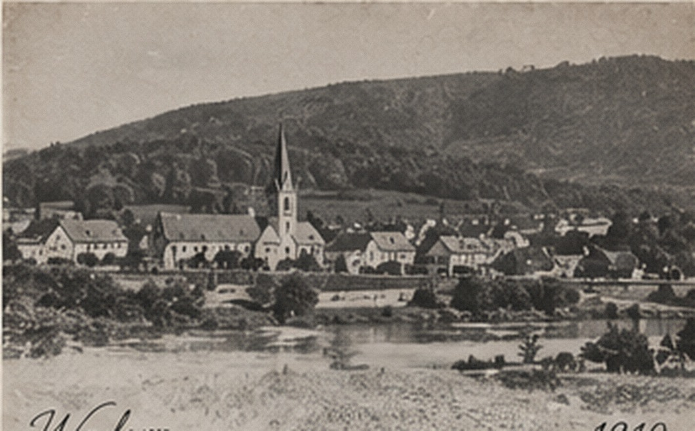
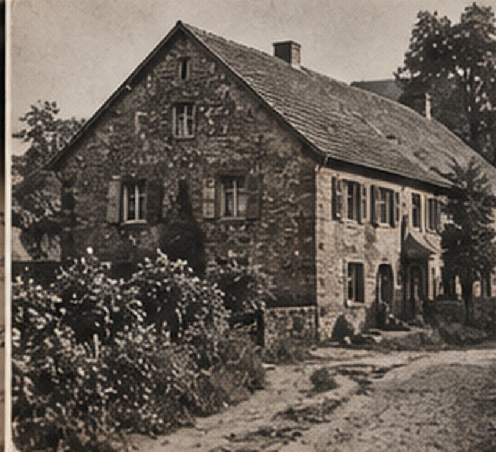
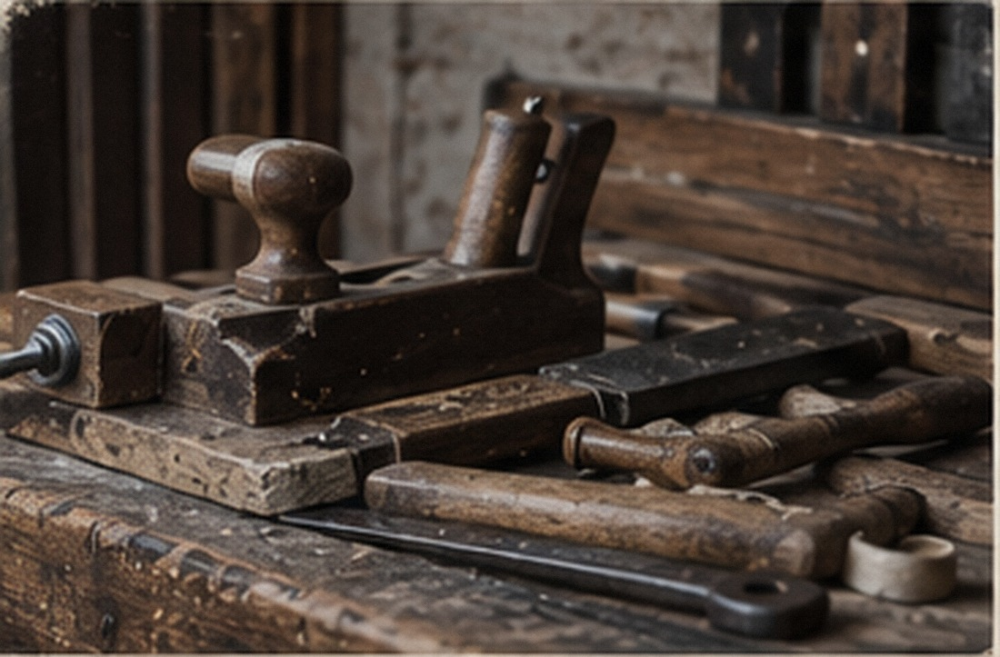

THE PEOPLE & THEIR LINES
Family chapters
These are working histories, not final trees. Each chapter keeps its earliest anchor apart from the older clues still awaiting original records.
From the American bridge back toward Büschfeld and Wadern.

The working American sequence is Charles Joseph Lauermann (1889–1970) → John Lauermann (1856–1948) → Peter Lauermann (1823–1857) → proposed Peter Lauermann II, reported born 16 June 1794. Büschfeld and Wadern, in today’s Saarland, are the central homeland research area.
The record that could unlock the line
Find Peter II’s June 1794 Catholic baptism in the Wadern/Büschfeld area. It may identify his parents, lead to their marriage, and establish the parish chain needed before any earlier Lauermann claim is treated as proven.
An American family story with an East Prussian question at its center.

Anamae Lezer (1928–2026) is the American bridge. Her father is reported as Fred Lezer, born about 2 January 1881, possibly in Kurkau, Kreis Neidenburg, East Prussia, and married to Anna Grabinski. Gladys, Dorothy, Lorraine, Helen, and Eleanor are reported relatives whose exact relationships still require verification.
Bridge records come first
Prove Fred’s birthplace and parents through U.S. bridge records, immigration/naturalization material, and then East Prussian or Polish civil and parish sources. “Kurkau” is a lead, not a settled birthplace claim.
A German village problem still waiting for its original records.

The working tree follows Margaretha Limperich (1866–1937) → Peter J. Limperich (1833–1932), associated with Elisabetha Herschbach (1840–1902). Elisabetha’s reported parents are Heinrich/Henry Herschbach (1809–1889) and Susanna/Susan Assenmacher (1811–1892). A possible Anna Margaretha Limperich, born 1794, is an older lead only.
Do not assign a village yet
The surname links are useful bridge candidates, but the archive will not convert an inferred locality into a fact until original records establish it.
Latinized names, parish gaps, and a rich working pedigree.

Anne Katherine Grossmann (1862–1937) descends in the working tree from Bartolomaeus Grossmann (1825–1909) and Catharinae Spoo (1832–1863). The proposed preceding couples are Mathias Grossmann (1784–1844) + Gerdrudis Freywald (1789–1851), and Nicolai/Nicolaus Spoo (1805–1855) + Anna Catharina Frings (1798–1859). Richardus/Richard Spoo (c. 1756–1830) + Barbara Ludovica (c. 1764–1830) sit one generation earlier.
“Richardi” is not automatically a middle name
It may be Latin grammar in a record rather than a separate given name. Establish the parish, locality, and original entries before standardizing the name or attaching parents.
The Irish chapter, with its farthest claim left deliberately open.
Through Margaret Cecile Brennan (1895–1976), the working sequence is Edward J. Brennan (1851–1901) → John Brennan (1805–1899) → Patrick G. Brennan (1780–1870) + Catherine Walsh (1784–1864). Marcus Walsh (1754–1795), William Walsh (1720–?), Maria Warren (1720–?), and James Warren (1682–?) appear in compiled-tree material.
The James Warren line is unverified
The 1682 Warren extension is a tree-only research lead, not established ancestry. The task is to prove or disprove it with Irish parish, civil, probate, and other original records—not to repeat it as fact.